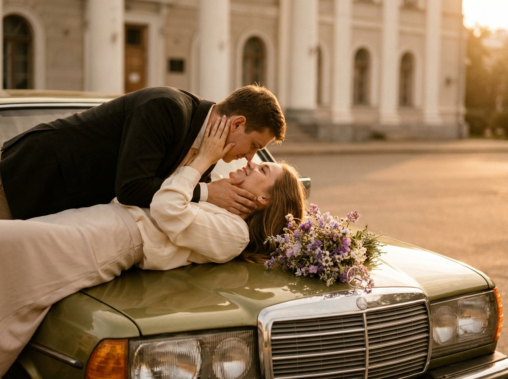
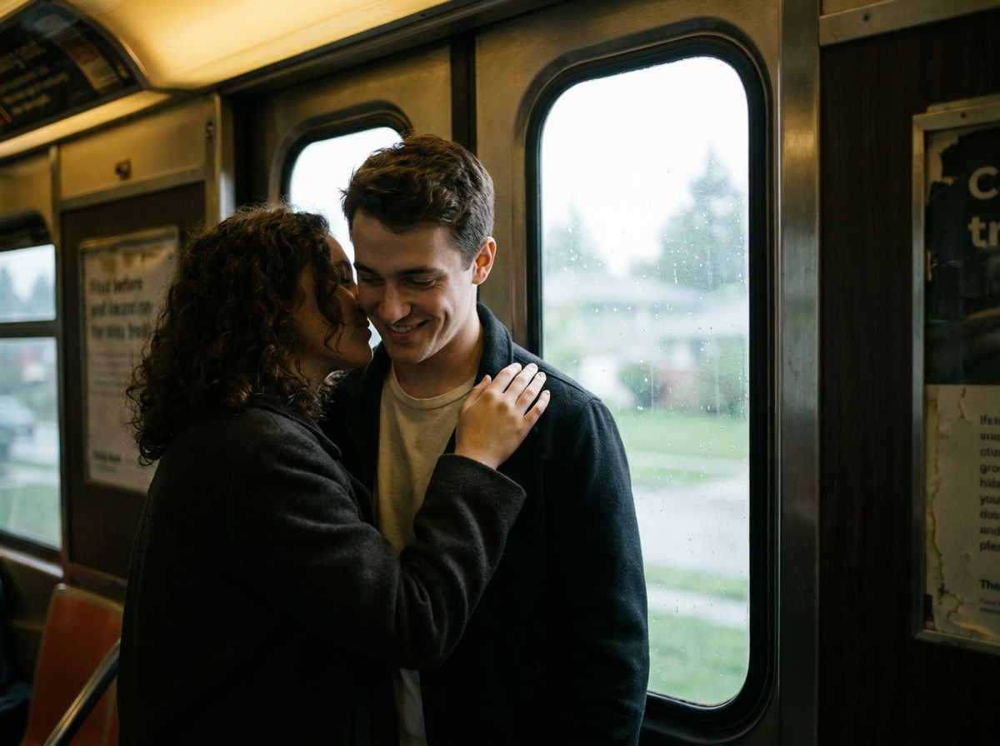
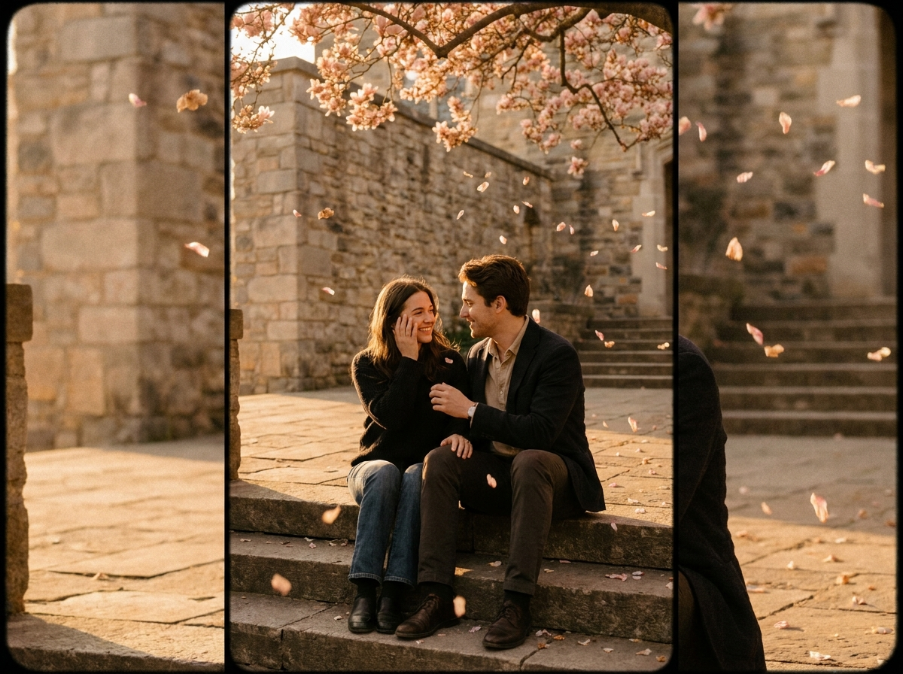
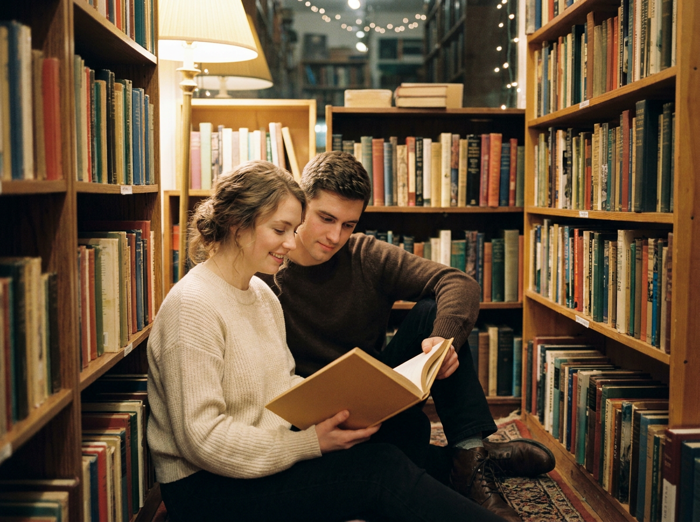
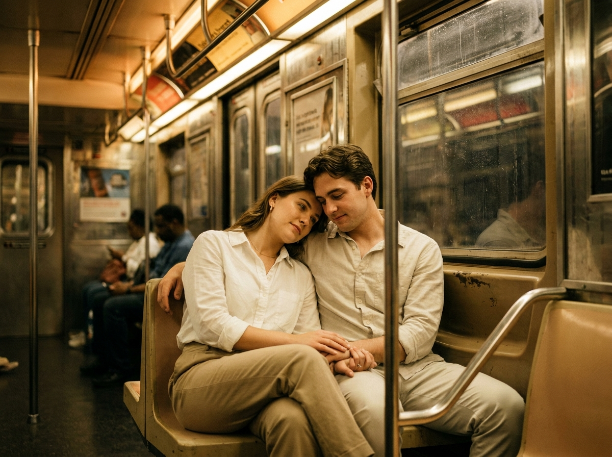
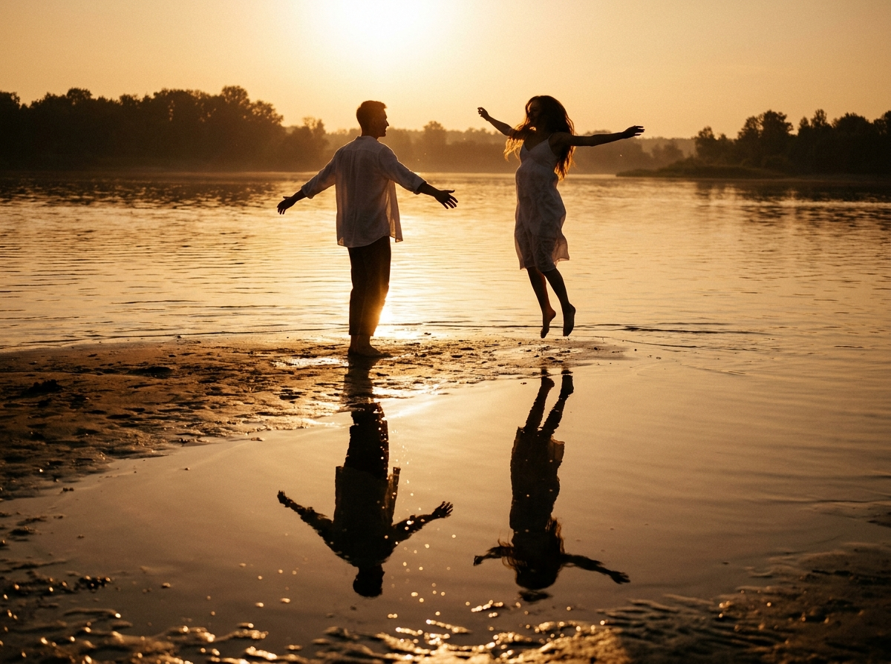
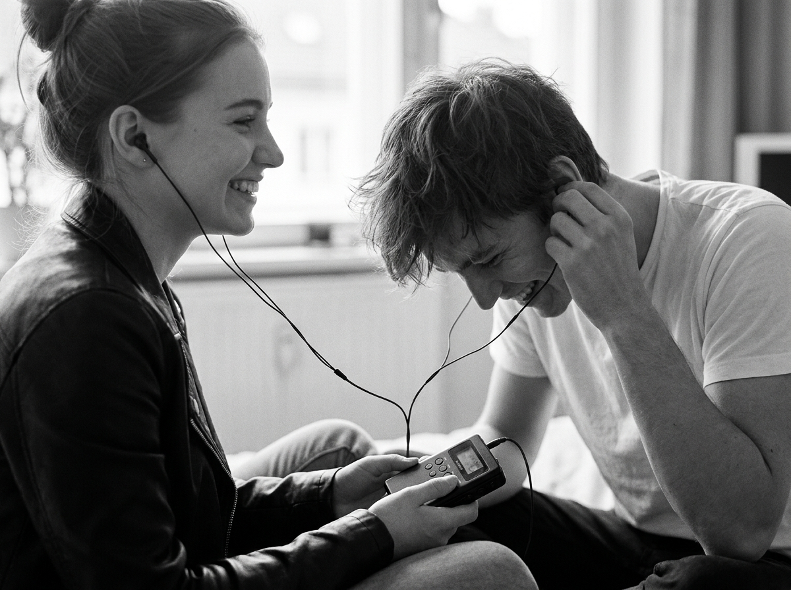
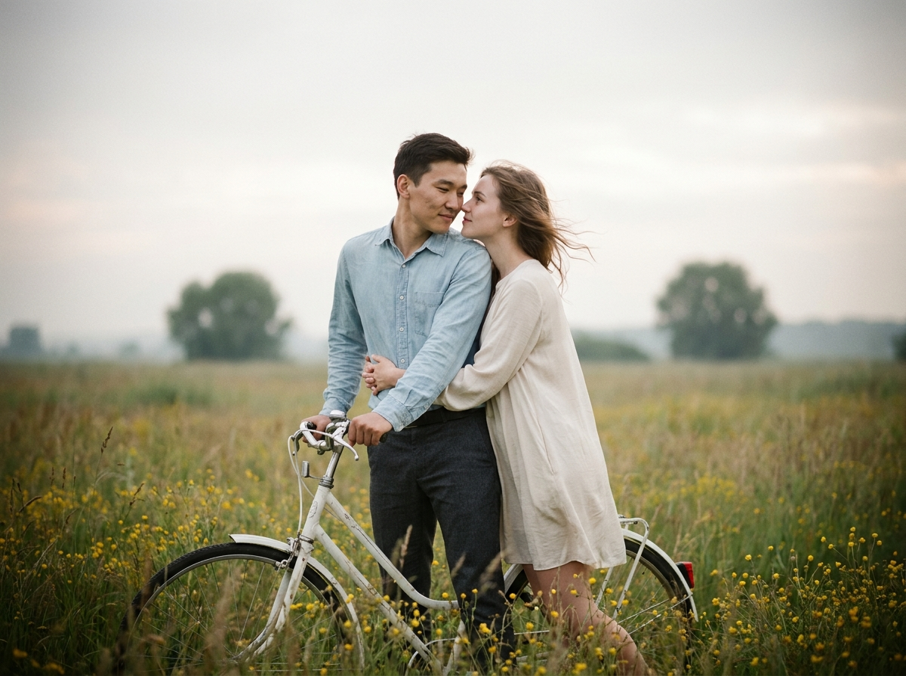
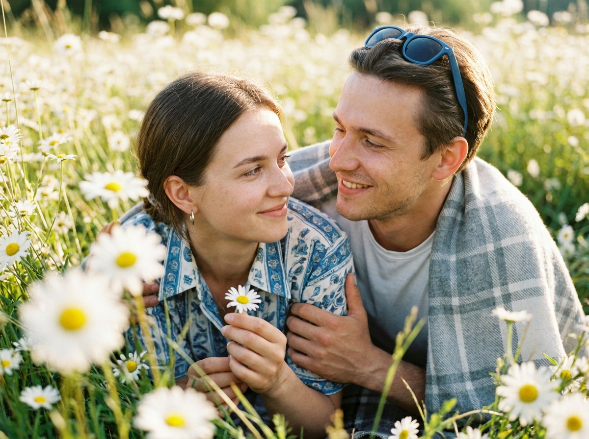
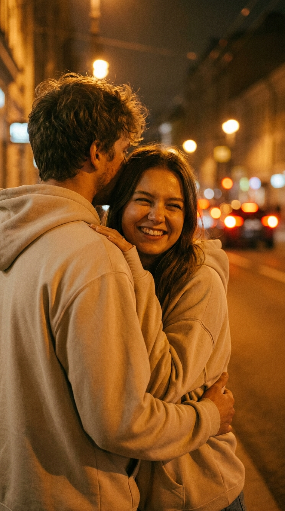

ИИ-фото для влюблённых: 10 промптов для нейросети

Хочется красивое фото вдвоём, но нет подходящей локации, фотографа или удачного момента? Генерация помогает собрать романтический кадр из деталей: позы, света, одежды и настроения.
Внутри - 10 сценариев для пары: от уютной поездки и чтения в библиотеке до прогулки у моря, пикника в ромашках и объятий под ночными огнями. Промпты можно использовать как основу и адаптировать под свой сюжет.
Как сгенерировать такое фото: пошагово
Нужен снимок анфас при ровном свете, лицо в кадре целиком, без тёмных очков и головных уборов. Разрешение от 1000 пикселей по короткой стороне. Чем чётче исходник, тем точнее модель повторит черты.
Выберите сценарий ниже и нажмите «Копировать» - текст уйдёт в буфер целиком, вместе с командой сохранения внешности. Эта команда стоит первой строкой и отвечает за то, чтобы на выходе было ваше лицо, а не случайное.
Кнопка «Сгенерировать» рядом с каждым промптом открывает модель в новой вкладке. Nano Banana Pro работает с референсом лица - в отличие от моделей, которые генерируют портрет с нуля и узнаваемость теряют.
Промпт - в поле ввода, портрет - через загрузку референса. Порядок значения не имеет, но без референса команда сохранения внешности работать не будет: модели нечего сохранять.
Для сторис и ленты берите 9:16, для превью и обложек - 4:3. Первый результат редко идеален: если поза или свет ушли не туда, поправьте соответствующую часть промпта и запустите заново. Обычно хватает двух-трёх итераций.
10 промптов для генерации
1. Нежность у автомобиля
Строго сохранить внешность по загруженному референсу: черты лица, пропорции, мимику и текстуру кожи без изменений. Вертикальная реалистичная кинематографическая фотография с film look: молодая взрослая пара в очень близкой, нежной позе у передней части автомобиля. Мужчина в тёмном пиджаке или куртке поверх светлой рубашки наклонён над капотом, обнимает женщину сбоку и бережно держит её голову ладонями. Женщина лежит или полулежит вдоль капота, смотрит вверх на партнёра; лица расположены близко, эмоция спокойная и романтичная, без агрессии. Пальцы анатомически правильные, аккуратно поддерживают затылок, без лишних конечностей и деформаций. Тёплая сепия и янтарная цветокоррекция, мягкий контраст, лёгкая дымка, винтажное настроение, естественная кожа, правдоподобные ткани, высокая детализация.
2. Поцелуй в вагоне

Строго сохранить внешность по загруженному референсу: черты лица, пропорции, мимику и текстуру кожи без изменений. Реалистичный вертикальный кадр в кинематографическом film look: молодая пара стоит у окна или дверного проёма вагона и прижимается друг к другу. Справа мужчина в трёхчетвертном ракурсе повёрнут к женщине, смотрит на неё с мягкой улыбкой. Слева, ближе к камере, женщина с волнистыми волосами; пряди закрывают часть её профиля. Она тянется к мужчине, держит руки у его плеч, затылка или груди, будто собирается поцеловать его либо нежно касается лбом и щекой. На ней тёмный жакет или пальто, образ минималистичный. Внутри транспорта тёплый янтарный свет, из окна падает холодное дневное освещение. Плёночная дымка, мягкий контраст, тонкое зерно, реалистичные лица, кожа и ткани, ощущение тепла и близости.
3. Свидание на ступенях

Строго сохранить внешность по загруженному референсу: черты лица, пропорции, мимику и текстуру кожи без изменений. Вертикальная реалистичная фотография с ретро-цветокоррекцией и кинематографическим film look: молодая пара сидит на каменных ступенях или площадке в уютном дворике либо парке. Девушка слева, с согнутыми коленями, слегка разворачивает корпус к мужчине и подносит ладонь к щеке или волосам, словно прикрывает взгляд. Она улыбается и кокетливо смотрит на партнёра. Мужчина справа немного наклонён к ней, одной рукой опирается на своё колено или держит её ладонь, другая рука лежит рядом; он смотрит на девушку с тёплой улыбкой. Позы естественные, похожие на случайно пойманный candid-момент. В фоне каменный дворик, высокая колонна или массивная стена справа либо по центру, мягкий уличный свет, умеренная виньетка, лёгкий плёночный шум, натуральная кожа.
4. Чтение между стеллажами

Строго сохранить внешность по загруженному референсу: черты лица, пропорции, мимику и текстуру кожи без изменений. Вертикальная реалистичная кинематографическая фотография в уютном интерьере книжного магазина или библиотеки. Молодая пара сидит рядом между высокими книжными стеллажами и вместе читает открытую книгу. Девушка слева, ближе к центру, наклонена к страницам; часть волос собрана или лежит на плечах. На ней светлый белый или молочный верх, тонкая рубашка либо блуза. Она смотрит вниз со спокойной мягкой улыбкой и держит книгу с тёплой желтовато-оранжевой обложкой или страницами, без читаемого текста. Справа парень в тёмном свитере слегка склоняется к ней, тоже следит за книгой; его поза уютная и защищающая, будто он поддерживает девушку плечом. Приглушённый тёплый свет, малая глубина резкости, мягкое зерно, лёгкая виньетка, реалистичные люди, кожа и фактура тканей.
5. Тихие объятия в метро

Строго сохранить внешность по загруженному референсу: черты лица, пропорции, мимику и текстуру кожи без изменений. Реалистичная кинематографическая фотография в вертикальном формате: интерьер метро или поезда, молодая пара сидит на скамье у окна или боковой панели в спокойном интимном моменте. Мужчина справа или ближе к центру сидит глубже на сиденье и поворачивается к девушке; одна его рука поддерживает её либо лежит поверх её колена и рук. Он смотрит немного вниз с нежным, расслабленным выражением. Девушка на переднем плане справа опирается спиной или боком на мужчину, прижимается к нему, держит голову рядом с его плечом. Их руки переплетены и плотно соприкасаются, поза передаёт доверие и поддержку во время поездки. Приглушённый тёплый свет, отражения в стекле, мягкое размытие фона, естественная кожа и ткани, тонкая плёночная дымка и зерно, moody subway interior.
6. Танец на мелководье

Строго сохранить внешность по загруженному референсу: черты лица, пропорции, мимику и текстуру кожи без изменений. Вертикальный кинематографический кадр с сильной контровой подсветкой на золотом часе или рассвете: молодая пара идёт, бежит и будто танцует по кромке воды. Слева мужчина в светлой рубашке или лёгкой одежде, его фигура читается силуэтом, ткань слегка развевается, руки разведены в стороны, одна нога вынесена в шаге. Справа женщина в лёгком платье или светлой одежде прыгает либо делает шаг, вытянув руки для равновесия; её длинные волосы летят на ветру. Оба находятся в центре кадра на фоне яркого тёплого неба, тела выглядят тёмными силуэтами. Внизу мокрый песок, мелкие волны и прибой, вода отражает золотой свет. На песке хорошо видны отражения пары, почти симметричная композиция. Янтарная палитра, haze, film look, зерно и мягкий контраст.
7. Одна музыка на двоих

Строго сохранить внешность по загруженному референсу: черты лица, пропорции, мимику и текстуру кожи без изменений. Реалистичная чёрно-белая фотография в духе vintage film и документального candid-снимка, вертикальный medium close-up. Два молодых человека сидят очень близко и слушают музыку через проводные наушники. Слева девушка повернулась вправо, улыбается и смеётся в профиль; в руках у неё небольшой портативный аудиоплеер с чёрным корпусом, кнопками и индикатором. Провода идут от её уха и шеи к устройству в центре кадра. Справа юноша наклонён вперёд, смотрит вниз и в сторону, смеётся и пальцами поправляет наушник у уха; его волосы слегка растрёпаны. Кабель второго наушника также соединён с плеером. Жесты синхронные и дружеские: девушка показывает устройство, парень ловит звук. Высокая детализация лиц и рук в фокусе, сильное плёночное зерно, мягкая печать, лёгкая виньетка.
8. Объятия на белом велосипеде

Строго сохранить внешность по загруженному референсу: черты лица, пропорции, мимику и текстуру кожи без изменений. Вертикальная реалистичная фотография пары в кинематографическом film look: белый велосипед стоит или движется среди высокой травы и множества мелких жёлтых полевых цветов, похожих на ромашки или калифорнийские маки, без узнаваемых брендов. Мужчина сидит на велосипеде слева и чуть позади, разворачивает корпус к женщине; на нём светло-голубая или белёсая рубашка с длинными рукавами, рукава собраны или лежат естественно. Женщина прижата к нему, смотрит вверх и в сторону его лица, её выражение спокойное и нежное. Она обнимает мужчину, а он поддерживает её руками за талию или спину. Лица находятся почти вплотную, момент похож на шёпот или поцелуй. Мягкая ретро-цветокоррекция, естественная кожа, тонкое зерно, небольшая виньетка, солнечный рассеянный свет, высокая трава и цветы создают красивое боке.
9. Пикник среди ромашек

Строго сохранить внешность по загруженному референсу: черты лица, пропорции, мимику и текстуру кожи без изменений. Реалистичная кинематографическая outdoor-фотография с мягким летним film look: молодая пара лежит в густом поле белых ромашек или маргариток. Мужчина расположен справа и сверху по диагонали, его голова хорошо видна; он обнимает женщину или тесно прижимается к ней, улыбается спокойно и тепло. Женщина лежит слева, её лицо находится ближе к камере, она смотрит на партнёра с мягкой улыбкой. Руки выглядят естественно: девушка держит небольшой цветок или стебелёк, мужчина обхватывает её за плечи или талию. На мужчине светло-серый клетчатый или полосатый плед либо верхняя накидка с заметной тканевой фактурой, пуговицами или кнопками. Тёплая летняя цветокоррекция, натуральная кожа, высокая детализация лиц и рук, много цветов на переднем плане, красивое боке, лёгкое зерно, солнечный свет.
10. Объятия под ночными огнями

Строго сохранить внешность по загруженному референсу: черты лица, пропорции, мимику и текстуру кожи без изменений. Вертикальная реалистичная кинематографическая фотография на ночной улице с тёплым street glow. Мужчина находится слева на переднем плане, его спина и плечо занимают значительную часть кадра; он крепко, но бережно обнимает девушку руками вокруг талии и спины. Девушка справа, ближе к центру, прижимается к нему и улыбается, её лицо видно в профиль или три четверти, глаза счастливо прищурены либо закрыты от улыбки. Её руки слегка обхватывают мужчину сзади. Настроение тёплое, безопасное, уютное, семейно-романтическое. У мужчины растрёпанные волосы и частично скрытое тенью лицо с различимым профилем; на нём светло-серый или бежевый худи с капюшоном либо мягким воротом, хорошо видны складки ткани. Мягко размытый фон, малая глубина резкости, естественная кожа, правильная экспозиция, тонкое film grain, без HDR-эффекта.
Что важно учесть в этом стиле
Романтический кадр держится не только на лицах, но и на понятной физике сцены. Описывайте, кто где находится, куда направлены корпуса, что делают руки и на чём лежит вес тела. Для объятий полезно отдельно указывать положение ладоней и пальцев: так нейросети реже создают лишние конечности.
Свет задаёт настроение сильнее цветового фильтра. Янтарный источник внутри вагона даст камерное тепло, холодное окно добавит глубину, а контровой рассвет превратит пару в выразительные силуэты. Для реалистичного результата указывайте естественную кожу, правдоподобные ткани, мягкий контраст, film grain и конкретную глубину резкости.
Идеи для вариаций
- Замените автомобиль на старый кабриолет, скутер или мотоцикл, сохранив ту же близкую позу.
- Перенесите сцену в ночной автобус, пустой трамвай или купе с дождём на стекле.
- Добавьте к библиотечному кадру стопку книг, настольную лампу и записку без читаемого текста.
- Для пляжа попробуйте туманное утро, штормовой прибой или отражение в луже после дождя.
- Вместо ромашкового поля используйте лаванду, высокую рожь, осенние листья или снег.
- Сделайте музыкальный снимок цветным, добавив красный плеер и солнечные блики на проводе.
Как собрать свой промпт
Начните с формата и типа изображения: «вертикальная реалистичная кинематографическая фотография, 4:5, объектив 50 мм, f/1.8». Затем задайте двух персонажей, их положение в кадре, контакт между ними, одежду и выражения лиц. Сначала описывайте главное действие, а фон оставляйте вторым слоем.
После сюжета добавьте свет, палитру, фактуру и технические ограничения: естественная кожа, реалистичные ткани, мягкий контраст, малая глубина резкости, 4K или 8K, без читаемого текста. Если результат нестабилен, меняйте по одному параметру и делайте 4–8 вариантов, а не переписывайте весь запрос сразу.
Ошибки, из-за которых кадр не получается
- Слишком много действий. Когда в одном запросе пара одновременно бежит, целуется, читает и держит реквизит, поза распадается. Оставьте одно главное действие.
- Неясная геометрия тела. Укажите стороны кадра, положение ног, плеч, головы и рук, особенно в объятиях и сценах на велосипеде.
- Конфликт света. Не смешивайте полуденное солнце, неон и мягкий рассвет без объяснения источников. Опишите главный свет и его направление.
- Абстрактная романтика. Слова «идеальная любовь» мало помогают. Замените их жестом: ладонь на затылке, щека у плеча, переплетённые пальцы.
- Перегруженный негативный промпт. Длинный список запретов может вытеснить сюжет. Оставьте ключевые ограничения: лишние пальцы, деформированные руки, нечитаемый текст, HDR и пластиковая кожа.
Частые вопросы
Как сделать такое ИИ-фото бесплатно?
Попробуйте Kandinsky, Шедеврум, Krea AI или Arena.ai: у них есть бесплатный доступ, но лимиты, очередь, скорость и качество зависят от сервиса. Референс загрузить можно не всегда или только в отдельных режимах; при переносе внешности лицо, руки и одежда могут заметно измениться. Для стабильного результата делайте несколько генераций, а затем уточняйте промпт.
Как сохранить похожие лица пары?
Используйте референсы, если выбранный режим их поддерживает, и добавляйте отдельное описание каждого человека: причёска, цвет волос, форма лица, одежда. Лучше загружать чёткие снимки без сильных фильтров. Даже при этом нейросеть может менять черты, поэтому для серии кадров фиксируйте seed или используйте один исходный результат.
Почему нейросеть портит руки и объятия?
Сложный контакт нескольких рук остаётся одной из самых проблемных сцен. Опишите каждую руку отдельно: чья она, где лежит ладонь, куда направлены пальцы. Не добавляйте сразу несколько жестов. Если артефакт уже появился, перегенерируйте область кистей или сделайте новый вариант с более простой позой.
Как получить киношный, а не пластиковый результат?
Укажите естественную кожу, реалистичные ткани, мягкий контраст, плёночное зерно, лёгкую дымку и конкретный источник света. Не злоупотребляйте словами «ультрареалистичный» и «HDR»: они часто дают чрезмерную резкость и глянцевые лица. Для портрета попробуйте объектив 50 или 85 мм, f/1.8–2.8 и разрешение от 2048 пикселей по длинной стороне.